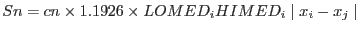

On top of some of the graphs you will notice that an Sn value is given- this parameter gives a robust estimate of the data spread (standard deviation), and is computed using

Please see the paper by Rousseeuw, P.J. and Croux, C. (1993), "Alternatives to the Median Absolute Deviation," Journal of the American Statistical Association, Vol. 88, 1273-1283.
For an image with pure poisson noise and few sources the Sn value should be roughly equal to the mean of all the image pixel values.